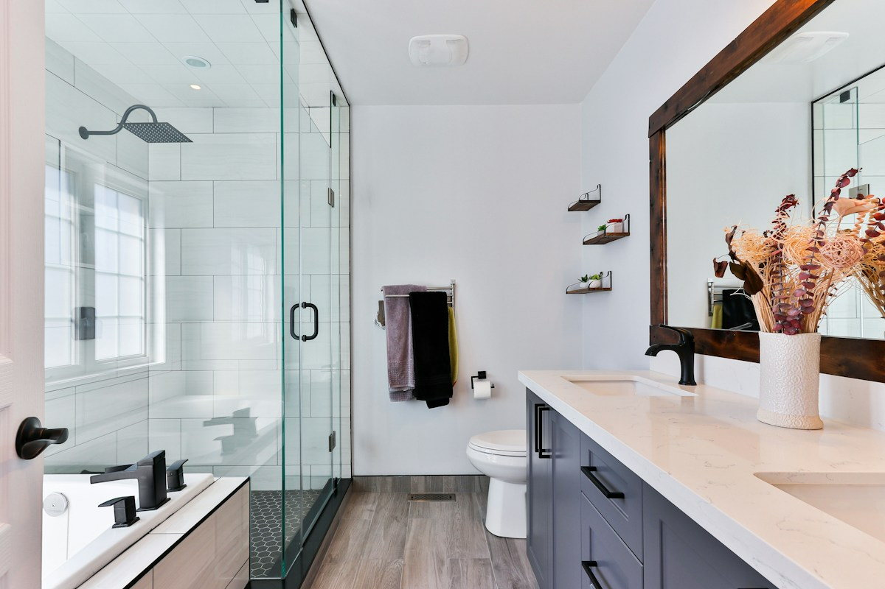

Pumping
How often to pump by household size
Compare household load, capacity and past records to choose a realistic pumping interval.
Read the full guideNo one dreams of reading a septic maintenance guide on a Saturday. But five minutes with the right advice can spare you a very long Monday. Search the topics below for practical habits, red flags and safe next steps.
Filter by prevention, pumping, inspection or seasonal care. Each article gives practical actions rather than vague reassurances.
Compare household load, capacity and past records to choose a realistic pumping interval.
Read the full guide
Wipes, grease and cleaners do not magically disappear because they leave the bowl.
Read the full guideKnow what sludge layers, scum levels and baffles tell a trained technician.
Read the full guideHeavy ground moisture can change how well the soil accepts effluent.
Read the full guideAsk for maintenance receipts, access plans and a real inspection before signing.
Read the full guideChoose shallow roots, manage runoff and keep vehicles off underground lines.
Read the full guideThe shortest useful answer: before sludge travels where only liquid should go. Here is how to make that decision with more evidence and less guesswork.
A septic system relies on quiet separation. The tank holds wastewater long enough for sludge to settle and scum to float before the middle liquid layer flows onward. More people usually means more water and solids, reducing the time between pumping visits. The number of bathrooms is less useful than how the home is actually used.
A larger tank generally buys time, but heavy laundry days, leaks and high-flow fixtures can still overload the system. If a property has changed from two residents to a large household, a schedule set years ago may no longer fit. Start with the tank capacity shown in plans, not a guess based on the house size.
Keep a simple log: service date, approximate tank capacity, technician observations, sludge depth if measured, and any problems with baffles or access. Photos of an accessible riser location can save time at the next visit. A receipt alone is less useful without the service scope.
Slow fixtures in several rooms, persistent sewage odors, wet patches over the field and indoor backup are reasons to seek an assessment before the planned pumping date. Pumping is not a cure for every pipe problem. A camera or drain-field assessment may be a better first step.
Saturated ground can make drainage problems more visible. Avoid directing stormwater toward the field, do not drive vehicles over the buried lines, and watch for ponding or odors. If wastewater is exposed, keep children and pets away and call a trained operator.
Combine tank capacity, household size and service history to make an initial estimate. For many homes, a 2-5 year interval is a reasonable conversation starter, not a guarantee. Adjust the schedule after an onsite review, and save the next target year where everyone can find it.
Arrange a mechanized pumping or inspection visit before a minor issue turns into a very expensive weekend.